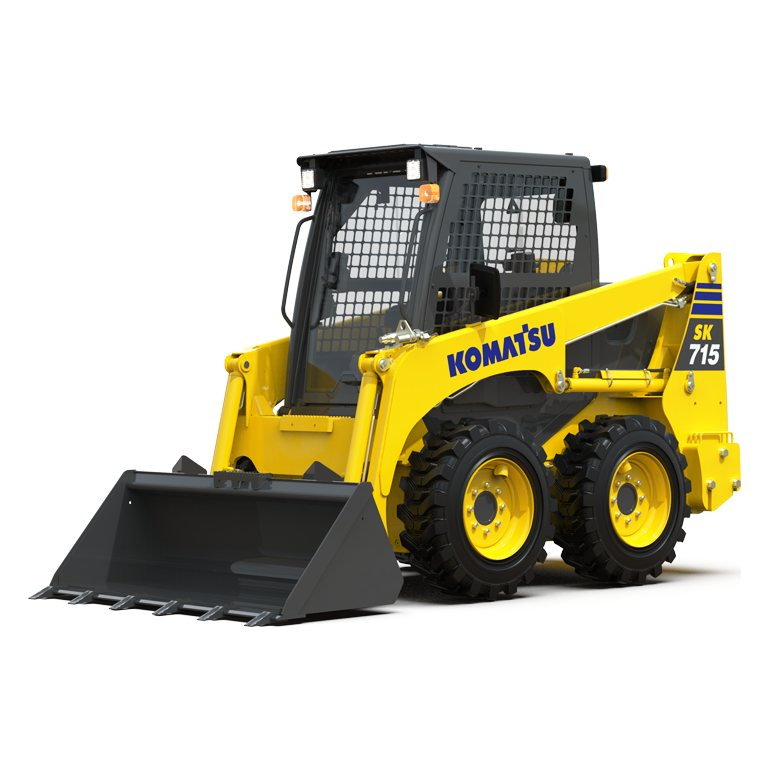
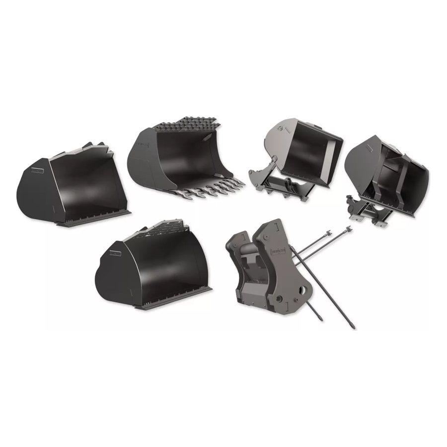
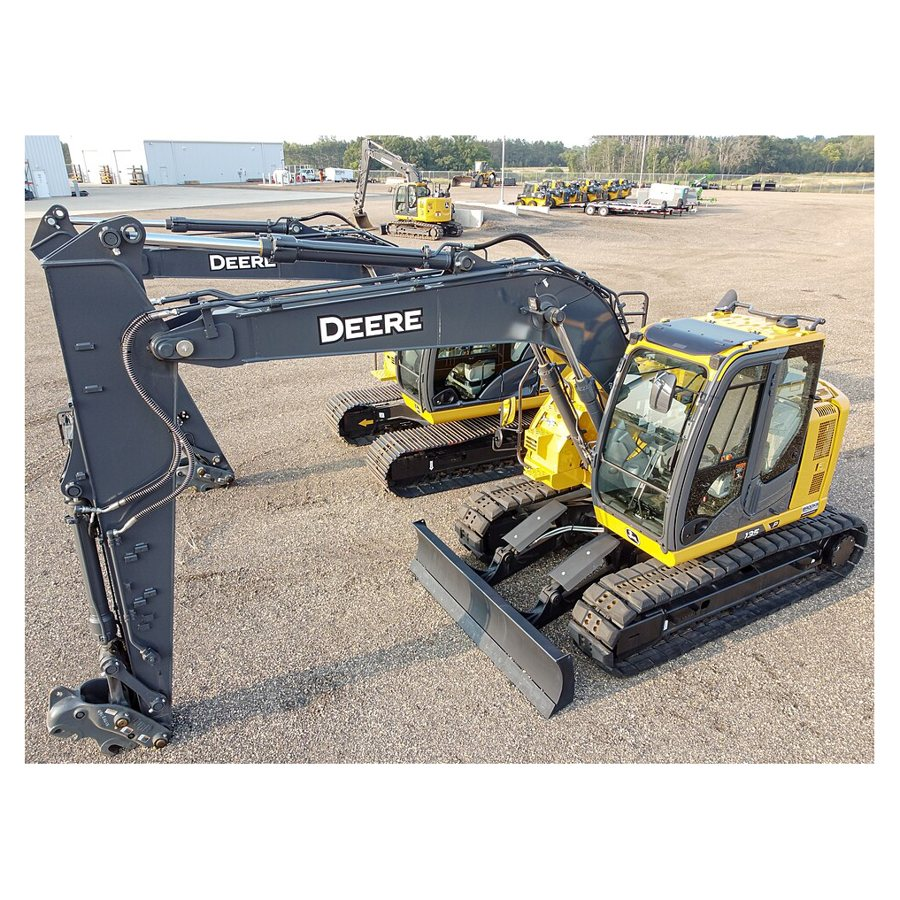
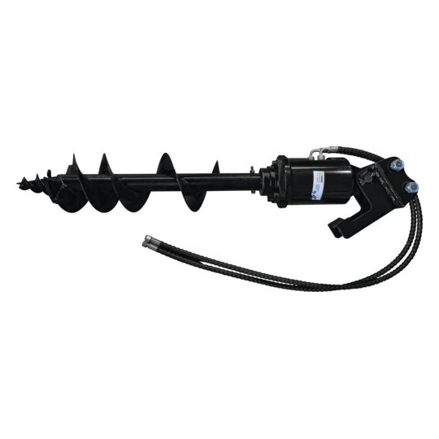
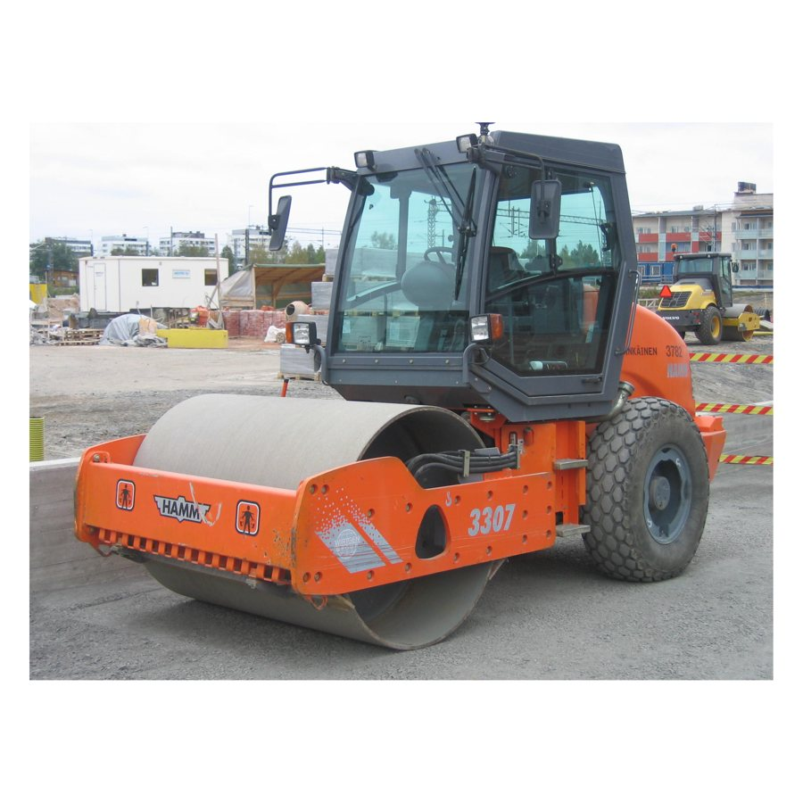
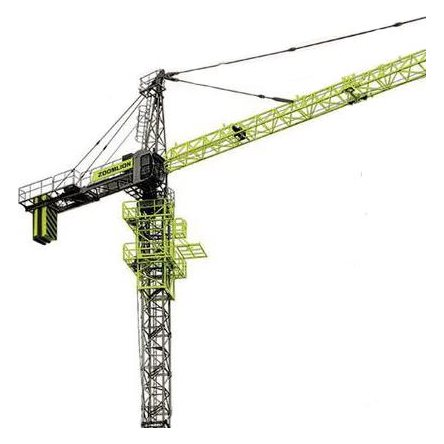
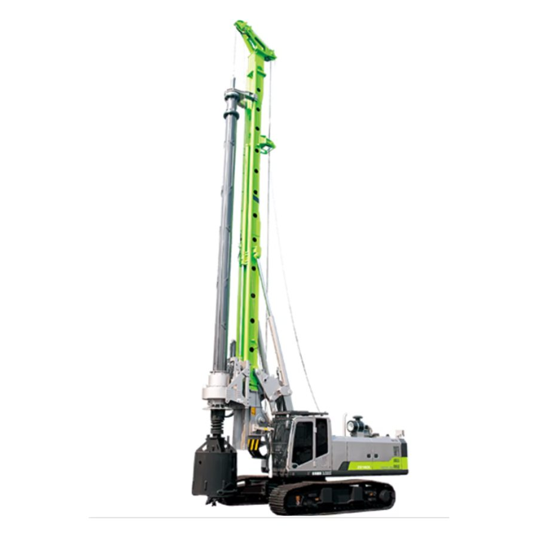
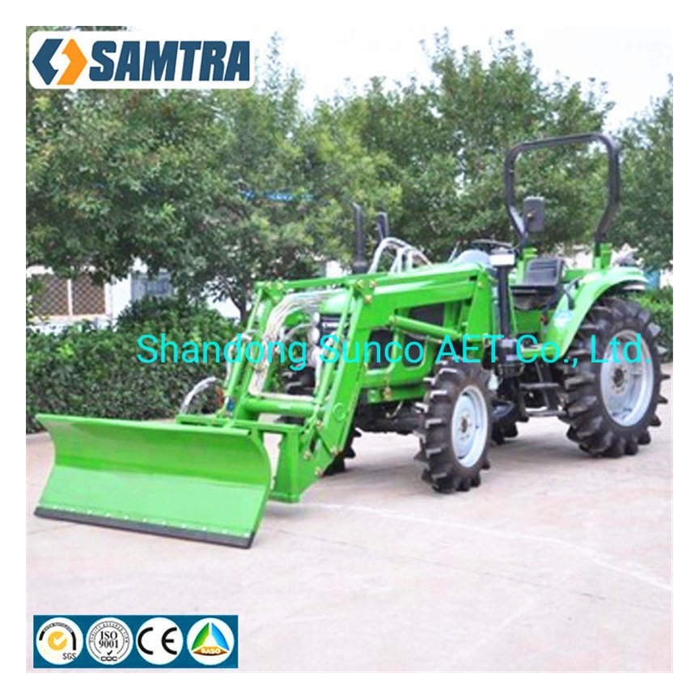
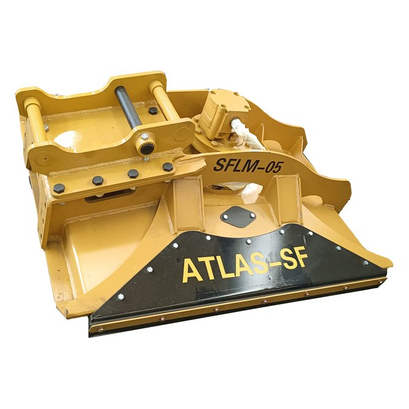

图片仅供参考，展示产品类型。
工程机械
挖掘装载机 （约8吨）
8吨级四驱挖掘装载机，配1.0立方米装载斗和后置挖掘臂，适用于市政和土建工程。
8吨级挖掘装载机把前置装载机（1.0立方米）和后置挖掘臂集于一台可上路行驶的机器，在较小工地、市政作业和管线施工中可替代装载机和挖掘机。
技术参数
| 整机质量 | 7800 千克 |
|---|---|
| 发动机功率 | 70 kW（94马力），2200 转/分 |
| 装载斗／额定载荷 | 1.0 立方米（堆尖）／2500 千克 |
| 外形尺寸／最高车速 | 7400 × 2350 × 3450 毫米／40 公里/小时 |
| 海关编码（HS） | 84295900 |
欧盟标准与法规
2006/42/EG → (EU) 2023/1230机械指令，自2027年1月20日起由机械法规 (EU) 2023/1230 取代——CE标志与符合性声明(EU) 2016/1628非道路移动机械发动机第五阶段排放限值——发动机欧盟型式认证2000/14/EGEN 474-1 / EN 474-4土方机械——安全：通用要求／挖掘装载机要求StVZO / FZV在公共道路行驶时按自行式作业机械办理道路登记（单车许可，StVZO 第21条）
本类别其他产品

紧凑型滑移装载机 （约1吨级）灵活的滑移装载机，适用于狭窄工地的物料转运、清理和各类属具作业。

紧凑型铰接式轮式装载机 （约1.5吨级, 柴油）铰接式紧凑型轮式装载机，适用于拆除工地的碎石装载、物料运输和料箱装料。

大型轮式装载机 （铰接式, 约18吨, 柴油）18吨级大型轮式装载机，铲斗容量约3立方米，适用于土方、散料和再生料场。

1.8吨履带式微型挖掘机 （柴油）1.8吨级紧凑型履带微型挖掘机，适用于狭窄的室内清拆和拆除工地。

约6吨级履带式挖掘机 （柴油）多用途6吨级履带挖掘机，适用于中型工地的拆除、土方和开挖作业。

约20吨履带式挖掘机 （柴油）20吨级履带式挖掘机，适用于基坑、管沟和市政工程大宗土方开挖。

大型土方铰接式自卸车 （ADT）30–45吨级铰接式自卸车，适用于越野和工地便道上的大宗物料运输。

500公斤电动履带自卸车 （电池）低排放电池履带自卸车，适用于建筑物内及松软地面的碎石和物料运输。

挖掘机属具：铲斗与快换接头适用于微型至20吨级挖掘机的铲斗与快换接头，机械式或液压式。

液压破碎锤 （适用于3–8吨挖掘机）安装在挖掘机上的破碎锤，用于拆除和清拆中破碎混凝土、砖石和找平层。

迷你挖掘机橡胶履带，规格230 × 96 × 33 （每台机器需2条）迷你挖掘机常用规格230 × 96 × 33毫米的环形橡胶履带，用于更换磨损的原装履带。

1–3吨迷你挖掘机液压拇指 （抓取拇指）安装在斗杆上的液压拇指，使铲斗变成可抓取木材、管材和石块的抓具。

1.5–3吨迷你挖掘机液压打孔钻驱动装置 （可选Ø100–300毫米钻头）带行星减速箱的液压钻孔驱动装置，安装在迷你挖掘机斗杆上，可钻桩孔、种植孔和基础孔。

紧凑型装载机及农场装载机用欧标快挂货叉 （托盘叉）带欧标快换架的货叉，可把装载机变成托盘搬运机。

履带式推土机 （约17吨）17吨级履带推土机，配直倾铲刀与三齿松土器，适用于土方、便道和垃圾填埋场作业。

平地机 （约15吨）15吨级自行式平地机，配3.66米铲刀，适用于路基整平、道路养护和筑路。

双钢轮压路机 （沥青, 约3吨）3吨级自行式振动双钢轮压路机，适用于沥青路面、人行道和自行车道、停车场及修补作业。

沥青摊铺机，摊铺宽度约2.5–6米履带式摊铺机，配液压伸缩电加热熨平板，摊铺宽度2.5至6米。

伸缩臂叉装车 （Telehandler）约4吨/14米，柴油

25吨汽车起重机 （三轴）

平头塔式起重机 （约6–8吨）

大直径灌注桩旋挖钻机，约160 kN·m

建筑垃圾回收用履带式移动颚式破碎机

移动式履带筛分站 200–600吨/小时配8.1立方米受料斗、1,800 × 4,500毫米筛箱、处理量200–600吨/小时的移动式筛分站。

1吨轮式工地翻斗车,柴油,四驱带液压翻斗的紧凑型柴油翻斗车,适用于园林和工地。

90公斤汽油平板夯用于铺路、砾石和沥青修补的汽油平板夯。

钢制沟槽支护箱保护管沟工人的钢制支护箱。

滑移装载机用角度扫帚属具滑移装载机液压角度扫帚。

小型挖掘机斗齿小型挖掘机铲斗耐磨齿。

汽油振动冲击夯用于沟槽和基础的汽油冲击夯。

滑移/前装载机推雪铲装载机冬季除雪钢制推雪铲。

挖掘机液压割灌/粉碎头挖掘机用液压粉碎头,用于清理场地。